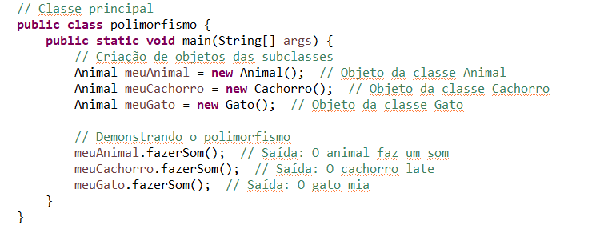

A Programação Orientada a Objetos é um modelo de programação baseada em objetos, que podem ser qualquer coisa no mundo real, seja ela inanimada ou não. Os objetos possuem características (que são chamadas de atributos) e ações praticáveis (que são chamadas de métodos) e eles são definidos como instâncias em classes, que são uma espécie de molde que define as possiveis características e ações do objeto.
A P.O.O. é fundamentada a partir de quatro pilares principais, que garantem a aplicação correta do modelo. São eles:
O encapsulamento é o agrupamento de coisas que fazem sentido para manter a integridade dos seus dados. Assim como um mercado tem setores que agrupam produtos semelhantes para melhor organização, um código encapsulado possui classes que agrupam variáveis e funções que conversam entre si, de forma que a alteração dos detalhes de implementação não afete o restante do sistema. Por exemplo:
No setor de produtos de limpeza, temos um desinfetante de uma determinada marca, com um determinado preço e esse conjunto de dados (classe) refere-se à aplicação do encapsulamento, que visa controlar o acesso à esses dados para que somente os funcionários encarregados desse setor (métodos da classe) possam manipulá-los.
Na imagem acima, há variáveis privadas com métodos públicos que permitem a alteração dos dados sem a alteração do código, isso evita que outros programadores cometam erros ao manipular os dados da classe. No nosso exemplo anterior, isso seria como permitir que os produtos mudem de posição dentro do setor sem que outros funcionários tenham seus trabalhos afetados.
A herança pode ser interpretada em seu sentido literal. Ela refere-se à cópia de características de uma classe com pequenas adições que evitaria a repetição das estruturas de decisão. De forma genética, por exemplo, os filhos podem herdar características físicas com pequenas diferenças, como quando se há semelhanças na feição entre pais e filhos, mas, há também características únicas em cada um.
Em um código, esse conceito se aplicaria como a criação de uma classe que utiliza as funções de uma superclasse para apresentar alguma variação adicional em uma subclasse.
No exemplo acima, a superclasse referente à animais, que pode abordar qualquer tipo de animal, foi herdada na subclasse, que aborda de forma especifica o animal cachorro. A herança tem como objetivo especializar atributos reaproveitando o código generalizado.
A abstração pode ser resumida como a ocultação de informações com exposição desnecessária. Por exemplo, ao fazer um resumo escolar, selecionamos apenas as partes necessárias para o entendimento do aluno e descartamos informações que não mudam a qualidade das informações. Nesse sentido, as propriedades e os métodos que não precisam ser vistos no mundo exterior ao objeto, são ocultados, mas permanecem no código.
No exemplo acima, a classe abstrata “Banco” define como essenciais os métodos abstratos “sacar” e “depositar”, enquanto a classe “ContaCorrente” implementa os métodos abstratos com maior especificação e detalhamento dos respectivos métodos de manipulação de saldo. Assim, ao adentrarmos a classe principal, lidamos com operações de depósito e saque sem que haja a necessidade de se aprofundar nos detalhes do processamento interno das operações feitas na conta corrente.
O polimorfismo permite a mesma interpretação de vários objetos, mesmo que sejam de diferentes classes. Pensando no mundo real, temos diferentes jogadores de um determinado esporte que possui habilidades únicas, mas, que atuam na mesma posição. Seria como englobar todos os zagueiros do mundo como uma coisa só, sem se importar com altura, peso, velocidade média, etc. Portanto, o polimorfismo é a generalização de objetos de diferentes classes.
No exemplo acima, o polimorfismo foi utilizado para diferentes espécies de animais em diferentes classes sejam tratados como objeto “Animal”, que independe de suas classes especificas.